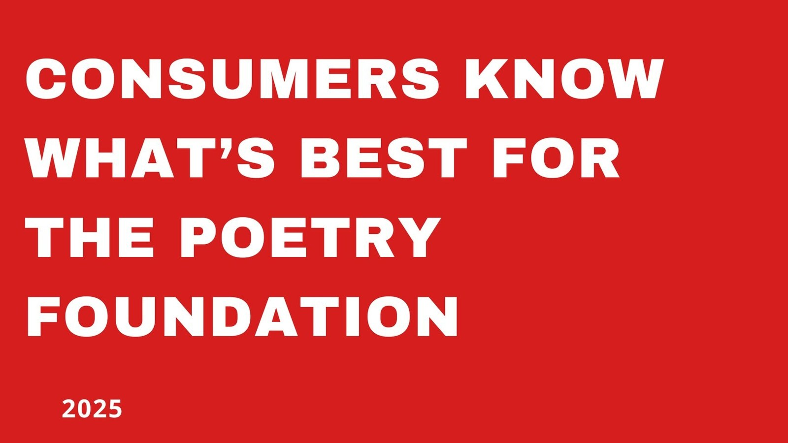

Research
Research, proposals and networking
What I've been digging into: platforms and IP, audiences, language trends and how media holds attention.
Graduate research and proposals · UAL
Platform metrics from fan participation produce verified content and limit producers' risk when deciding acquisitions.
Graduate research paper · UAL · December 2025
The Webtoon: a master of IP jumping from platforms into multiple media formats
How fan data on webtoon platforms turns stories into pre-validated IP for anime, TV and games.
Read more →The Jesuit missionaries corrupted various Indigenous American languages
Published commentary · UAL · 2026
Jesuit Mission Press: Erasure Through Weaponized Religion
My commentary on how Jesuit mission presses rewrote Indigenous American languages, as printed in our zine.
Read more →
Audience report · UAL · November 2025
Consumers know what's best for the Poetry Foundation
A project where I chose a real publisher and pretended to internally pitch a consumer insights department.
Read more →Imagine Mary M. Ward's cheerfully whimsical book Entomology in Sport brought to life as an educational digital reimagination.
Innovation proposal · UAL · April 2026
Entomology in Sport
A calm, digital picture book for Ladybird on Epic!, piloted as one title to gather engagement data before a series.
Read more →Their research explores how the world of publishing overlaps with the business side of digital marketing.
Graduate research review · UAL · October 2025
Can Bookstagrammers make a book more recognizable?
A review of a study measuring how an influencer-led Bookstagram tour changed a book's visibility.
Read more →oh yeah I'm fine, I'm just exhausted from yappin' everyone's ear off
London Book Fair · dissertation
How a coffee line changed my dissertation
A sigh in a coffee line at the London Book Fair turned into my dissertation on Libraro.
Read more →Undergraduate research and analysis · LSU
'Lowkey' just highkey found its opposite.
Undergraduate research · LSU
A Study of the Relationship Between 'lowkey' and 'highkey'
My own survey tracking how a piece of slang grew an opposite, and what each word does to its audience.
Read more →Alisoun’s use of her sexuality to manipulate men … discredits her as a feminist figure.
Undergraduate literary criticism · LSU · October 2018
Anti-Feminism in The Wife of Bath’s Tale and Prologue
Why the Wife of Bath, often read as a proto-feminist, ends up discrediting her own case.
Read more →She strips down big concepts into emotion, action, and intention.
Undergraduate literary criticism · LSU · April 2019
“Wanting to do it is doing it”: Action and Inaction
How memories can affect our perception of ourselves, reality, and those around us in Toni Morrison’s “Recitatif”.
Read more →Working with AI
Working with AI
How I use it
I have experience using AI tools in content creation and workflow support. While planning Ink, Paper, Power I used ChatGPT for research on publishing newsletters. I am aware Chat may potentially give unreliable statistics about publishing newsletter monthly traffic, but decided to go ahead and use it as a general baseline.
The main regret I have for my Inferno dual translation prototype is choosing to use AI for translating the original English translation into modern language. Looking back, my choice seems pretty lazy. I'm a strong writer and could have translated the text myself, which would've made the prototype more creative and personal.